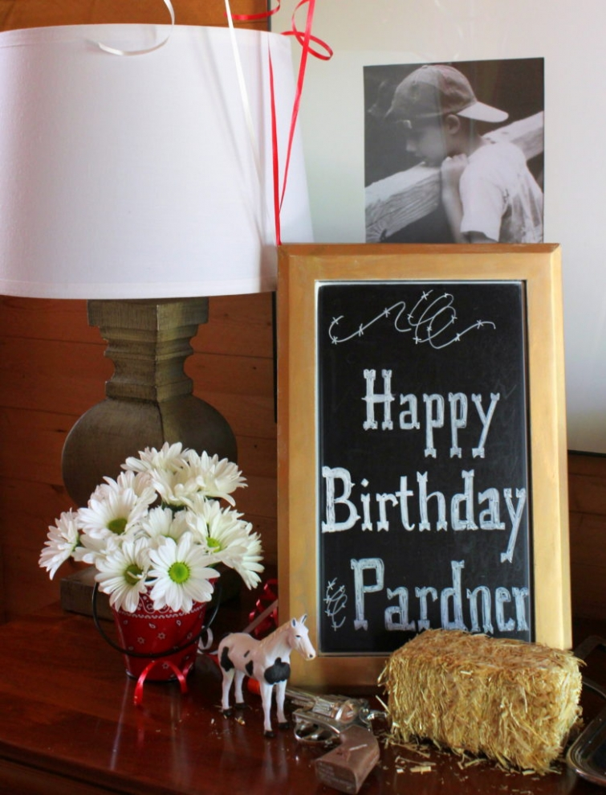

.png)
.PNG)
.PNG)
.PNG)
.PNG)
.PNG)
.JPG)
.JPG)
.PNG)
.PNG)


Welcome back friends!¬† I hope you are having a good week.¬† We have been busy busy here!!¬† The other night I was looking back through all my photo files and found sooooo many things that I did not get to share with you while I was taking a break to help with working on our house.¬† So for the next few posts, I just want to play catch up with you.¬† üôÇ

One of the main things I missed sharing was all the birthday parties from last spring and fall.¬† So let’s start by looking at one we had for my dad. üôÇ
If I were to say my dad¬†loves westerns, that would be a major understatement.¬† I think he has watched every single episode of Gunsmoke 5 or 6 times each…along with Rifleman, Rawhide, Have Gun Will Travel, Bonanza, and any other western themed show that has ever been made in the history of television! üôÇ

And of course he has watched many a cowboy movie at the theater and read all the Zane Grey books that have ever been published.

So it just made perfect sense to do a small cowboy themed birthday party for him last year.

The miniature hay bales and plastic horses from Hobby Lobby made great decorations, and I loved those little bandana printed buckets (from a local party store) that we used as vases to hold fresh daisies.


Those big jars from Target and Walmart come in handy for every kind of celebration around here you know. üôÇ

I asked everyone to wear a white shirt and jeans and provided them all with red bandanas and cowboy hats (also from the party store) so we could dress up for the dinner. üôǬ† While we were eating, I played a CD of music themes from assorted western movies and television shows.¬† We had to guess which show each song was from.¬† Lots of fun!¬† (And some good music too.)

We topped the table with a few bandanas, used gingham napkins, and served an easy meal of grilled burgers with all the toppings, potato chips, cole slaw, and baked beans.

Bottled old fashioned sodas and a plain homemade pound cake finished out our menu. The take home treat bags (from the photo at the top of the post) held Cowtail candy and hay bales (aka Rice Krispie treats.) I think my dad, the cowboy, enjoyed the party tailor made just for him. üôÇ

So that was one birthday celebration we hosted last spring.¬† Another one I haven’t shared with you is one we did for my daughter’s fiance.¬† He loves football (especially the Miami Dolphins!) so a football themed party seemed like a good choice for his birthday.

We served a veggie tray with ranch dip, strawberries with Nutella dip, hot wings, a baked potato bar, and assorted cookies.  (He requires gluten free food, and I found all those delicious gluten free cookies at Home Goods!)

All the green football themed paper goods came from Hobby Lobby.¬† Instead of a cake (which isn’t my favorite thing to make gluten free üôŬ† ) we came up with a pecan pie using a gluten free crust, and it was delicious!

And finally one for our middle child. He was working in Denver at the time of his actual birthday, but he was home a week later…which happened to be when we had the BIG solar eclipse.

So we kind of “killed two birds with one stone” in this one.¬† We celebrated the eclipse AND we had an “un-birthday” party to belatedly celebrate his day.¬† (Strangest theme I have ever done!)

This was not a meal…just snacks.¬† Eclipse themed items:¬† Moonshine Sweet Tea (no alcohol in it despite the name üôÇ ) Star Crunch Little Debbie snacks, Milky Way bars, and Starburst candy. (These would all work for any space themed party I think.)


And instead of a traditional birthday cake, we had strawberry shortcake – our son’s favorite. üôÇ

Okay, I feel a little more caught up now..but there’s still a long way to go!¬† Thank you so much for stopping by today. I hope you found an idea or two that you can use for a future birthday party in your home. üôǬ† And please come back again next time for a really¬†fun party we did for our daughter.¬† She said it’s her favorite party we have hosted for her – EVER! üôǬ† That’s a pretty big compliment I think!
Until next time…


.PNG)
I enjoy ALL your parties. And occasionally look back for ideas. My mom will be 90 in a few weeks and we had planned a big to-doo – but my sister was in a car accident a few weeks ago, and we will have to subdue our celebrations for the time being…although I do hope to be able to have a more elaborate celebration maybe after Easter.
Thanks for sharing missed parties…So thoughtful having a chosen theme for that certain person.
Can’t wait to see the best birthday party ever for your daughter.
You are still my favorite, everything you do is from the heart.
Your parents are precious! I agree with DiAnne, anything in those jars looks special! I love the dress code for your dad’s party! (I actually love clothing to match the theme.) The red and white gingham and the bandanas look great together! And, WHO matches their curtains to their party themes! You are quite the over-achiever, gf! The party favors are also so creative! All of your parties are fabulous!
Loved all your party ideas! Such great pictures too!
OMG Kelly!!!! You had Ale 8 at your cowboy party!!!! That’s a Kentucky soft drink bottled about 40 miles from my home. It use to be only sold locally but I heard it was being sold in other places now. Where did you find it??? Most Kentuckians will tell you that the best lunch is a bologna sandwich with Grippo BBQ chips and a super cold Ale 8 to wash it down!!!! I’m wondering if any of your party goers liked it?? Many say it’s an acquired taste. We love it but it’s ours so we may be partial. Loved all your parties. Thanks for the catch up post.
Kelly, You are so talented and loved all your party ideas. I especially loved what you did for your father. I’m sure he was so thrilled to see what his daughter had done to make his birthday so special. Hat’s off to you for a wonderful post.
Kelly,
I enjoy your website so much. The trip posts are so interesting especially last years Christmas trip. I am going to make a couple of the desserts that were in that post for the birthday party.
First timed for posting. Just wanted to let you know how much I have been enjoying your site
I love the cowboy party theme….perfect for my husband. He watches all those shows your dad watches. Whenever I come home and if he’s either home or has been home, the channel is either on ME TV or the financial channel!
You are a party planner extraordinaire! You need to go into party planning….you enjoy it so much and have such great ideas!
Have a wonderful weekend Kelly! I’ll be kicking up my heels in Mexico!
I may just have to schedule my birthday with a visit to your area! . . . hmmm. Honestly, I know your party honorees feel adored and so special with all the thoughtful details you add!
Kelly,
I love your parties! I think you can put anything in those glass jars and make it look good–hay bails and horses, how cute!
One of my favorite meals is hamburgers with all the fixings.
I can’t wait to see your daughter’s favorite party.
DiAnne
Kelly,
You throw the best parties! i love how you run with a theme but I know each person feels so special because of your details! Thanks for sharing. Take care.
Dawn
I always love your party themes!! So many great ideas. üôÇ
Thanks for sharing your great ideas for themed parties! I also have to eat gluten free (I have celiac) so I appreciate the effort you went to to accommodate your future son in law. Always good to see your posts in my inbox!!
What great parties, Kelly! My dad would have loved the cowboy party too. Your ingenuity is always impressive. How could anyone not have fun at the parties you throw?! Now I can hardly wait to see Hayley’s party. Whomever you throw a party for must feel the same way…the thrill in the suspense of what theme they will be greeted with, when they step through your doorway. Thanks for sharing the ideas and the FUN!
You just shared my kind of parties. Such heartfelt details went into each one for that someone special. I love your ideas and am so glad you are back. And yes, our household have seen all of those westerns too. Good ole days! Thank you so much for sharing. I am sure I will be borrowing some of your ideas.
I just love your blog! Many wonderful ideas-I have 3 grandsons and any new idea is great. 2 are fall babies so the hay bales and bandannas are a nice idea. Stay warm and hope for Spring.
What a fun uplifting post! Love looking at everything upclose by zooming in‚Äîand the menus are so great!! The themes are very creative and since we like to do theme parties‚Äîfantastic ideas! Looks like we are going to have to be very creative since we STILL have not had Xmas and it‚Äôs a bust for my BD due to flu throughout our family!! We have now set our date to catch up ‚Äî maybe Easter! So needless to say I truly enjoyed your family celebrations this past year! ü§óüíïüéâ
Kelly, thank you so much for sharing! I too always party with a theme and I love all of your ideas! Please continue to share…you are so talented in a very good way. Your ideas are reachable!!!! I feel like we are kindred spirits when it comes to our decorating tastes. You ROCK!
Will you please adopt me? You give the BEST parties!!
All of the parties are great. The western one would have been a hit here as well.